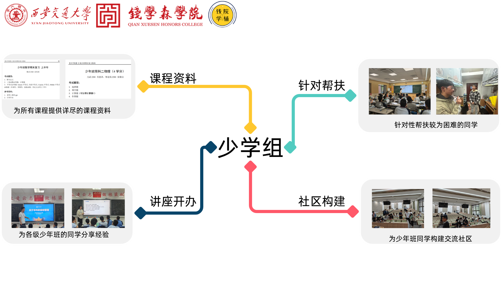

少学组帮助文档 🚀🤯🤪#

我们致力于为少年班学生提供公平开放的资料分享平台 🤝📚🌍
这个项目是少学组提供的帮助指南 🧭，旨在通过清晰简明地介绍少学组提供的资料以及信息 📑💡，为全体少年班学生提供公平开放的资料分享平台 👐💻，玩的开心！🎉🥳🎈
🤔 不知道从哪里开始？😵💫🤯#
别担心，我们为你准备了快速导航 🗺️📍（咻~）：
🛠️ 如果你不清楚如何使用我们提供的工具（比如如何浏览、搜索本文档 🔍🖱️），可以看看 这里 （包教包会，so easy! 😎）。
📚 如果你想要解决迫在眉睫的期末考试 😱🔥，这里 应该会有你想要的资料和复习重点 📖✍️（临时抱佛脚专用 🙏）。
🗺️ 如果你对未来感到迷茫 🌫️❓，不知道应该选择什么专业 🤔🤷♂️，这里 提供了全面的专业介绍和前景分析 🔮🌟（选对专业，少走弯路！）。
📄 如果你想要查看官方文件 📜🤓，了解制度的全面细节信息 🧐，这里 提供了一些存档 🗄️💾（官方盖章，权威认证！）。
✨ 如果你想要重温学长学姐的宝贵经验 💎🗣️，这里 保存了前人的智慧结晶 🧠💡（听学长学姐一句劝，少吃十年土！😂）。
🌟💖🌟💖🌟💖🌟💖🌟💖🌟💖🌟💖🌟💖🌟💖🌟💖🌟💖🌟💖🌟💖🌟💖🌟💖🌟#
❤️ 如果你觉得我们的工作有意义 👍，并且帮助到了你 🥰，不妨给我们的 GitHub 仓库 点亮一颗 Star ⭐✨，这将是对我们最大的鼓励！🥳🙌
如果你觉得我们提供的资源侵犯了你的版权 😱🚫，可以通过 GitHub 仓库 联系我们进行下架 🏃💨（我们会火速处理！）。
如果你发现我们提供的工具有任何使用上面的问题 🐛🐞😩，可以联系 网站维护人员 🧑💻 或者在我们的 GitHub 仓库 提出issue进行反馈 📢✍️。
免责声明：少学组是隶属于钱院学辅下面的分支学组 👨👩👧👦，由学生运营与维护 💪💻，不代表西安交通大学或者钱学森书（学）院的任何官方观点 🙅♂️。